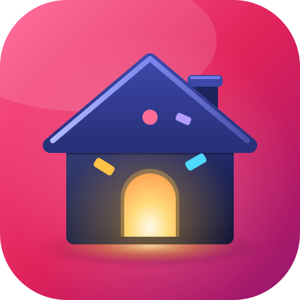

Revel House ▶ GiocaPrivacy
Informativa sul trattamento dei dati personali (Regolamento UE 2016/679, «GDPR») · aggiornata il 26 novembre 2026
Revel House è una raccolta di giochi da fare con gli amici dal telefono. Qui ti spieghiamo, in parole semplici, quali dati usa l'app, perché, dove vanno, chi li vede, quanto restano e come cancellarli. Non c'è pubblicità, non ti tracciamo e non vendiamo niente a nessuno.
- Chi siamo
- Cosa raccogliamo
- Le partite online
- Sul telefono
- Servizi esterni
- Quanto restano
- Cancellare il profilo
- I tuoi diritti
👤 Chi siamo e come contattarci
Il titolare del trattamento è Pasquale Cito, la persona privata che ha creato e gestisce Revel House (https://revelhouse.it). Revel House non è un'azienda.
Per qualsiasi domanda sui tuoi dati, o per chiederci di vederli, correggerli o cancellarli, scrivi a revelhouse.app@gmail.com. Ti rispondiamo entro un mese, di solito molto prima.
🗂️ Cosa raccogliamo e perché
Il profilo
Per giocare serve un profilo. Lo crei con un nome che scegli tu e una password: non ti chiediamo email, numero di telefono, nome vero, età né dove sei. Ti consigliamo di non usare il tuo nome e cognome veri, perché il nome del profilo lo vedono gli altri giocatori.
Nel profilo salviamo:
- il nome, la data in cui l'hai creato e un indirizzo interno finto fatto col nome (del tipo nome@sg.local), che serve solo a entrare e non è un'email vera;
- la password, che custodisce Google (Firebase) in forma protetta: noi non la vediamo mai;
- il tuo gettone (emoji e colori) e, se l'avevi fatto, il tuo avatar;
- livello, punti esperienza, Speed Coins (le monete finte del gioco), trofei e premi presi;
- le statistiche dei giochi: quante partite, vinte e perse, quanto tempo hai giocato e quando è stata l'ultima volta, i giorni di fila in cui sei entrato;
- la lista dei tuoi amici dentro Revel House e le richieste di amicizia mandate e ricevute;
- le cose che scegli di tenere: per esempio le parole aggiunte in Parola d'ordine, i ricordi del gruppo nella Linea del tempo, le tue Compagnie.
Perché: per farti entrare dal telefono che vuoi, ritrovare i tuoi progressi e giocare con gli amici. È il servizio che ci chiedi creando il profilo (art. 6.1.b del GDPR).
La scheda pubblica
Una parte del profilo la vedono gli altri giocatori che hanno un profilo: nome, gettone (o avatar), livello e quanti trofei hai, gioco per gioco. Serve alla classifica di tutti e a trovarti col nome per l'amicizia. Il resto del profilo lo vedi solo tu.
Il trasloco su un altro telefono
Se usi «📲 Porta il profilo su un altro telefono» (o arrivi dal vecchio indirizzo dell'app), il telefono prepara un pacco con l'accesso al profilo e le cose che ricorda. Il pacco è chiuso a chiave (cifrato): si apre solo col codice che vedi tu, il codice non arriva mai ai nostri server e dopo 2 ore il pacco non si apre più.
Proposte e segnalazioni
Se ci mandi una proposta o segnali un problema dalla home, riceviamo il testo che scrivi, il nome se lo metti (è facoltativo) e, per i problemi, la versione dell'app, la misura dello schermo e il tipo di telefono e browser. Ci arrivano per email (a revelhouse.app@gmail.com) passando da Web3Forms, un servizio che fa da postino. Li usiamo solo per migliorare il gioco.
Cosa NON facciamo
- Niente pubblicità e niente statistiche di altri servizi (niente Google Analytics, niente «pixel» dei social).
- Niente profilazione: non studiamo come giochi per venderti qualcosa.
- Niente cookie di tracciamento. L'app usa solo la memoria del telefono che le serve per funzionare (vedi sotto).
- Non vendiamo e non diamo i tuoi dati a nessuno, tranne ai servizi che fanno funzionare l'app, scritti qui sotto.
📶 Le partite online
Quando giochi online, ognuno dal suo telefono, i telefoni si parlano attraverso due servizi pubblici di messaggistica (MQTT): HiveMQ ed EMQX. Sono come due uffici postali: chi apre la stanza manda a tutti come va la partita e gli altri mandano le loro mosse.
Per ogni stanza passano:
- il tuo nome e il tuo gettone, e un codice a caso che dice quale telefono sei in quella stanza;
- se hai il profilo, il suo codice interno (un codice di lettere e numeri, non la password): serve a «Giocato di recente» e alle amicizie;
- le mosse e quello che scrivi nei giochi: risposte, indizi, frasi dei meme, voti, i messaggi alla squadra.
Attenzione: questi messaggi non sono cifrati da un telefono all'altro e li può leggere chi conosce il codice della stanza. Non scrivere nei giochi dati tuoi o di altri (indirizzi, numeri di telefono, password). L'ultimo stato della stanza può restare sul servizio per un po', finché la stanza non viene chiusa o sostituita.
Amici online e inviti
Se hai il profilo e degli amici, l'app lascia sul servizio di messaggistica un segnale «sono nell'app» (oppure «in un gioco», «in una Sala»), legato a un'impronta del tuo profilo da cui non si risale al profilo. Così i tuoi amici vedono il pallino verde e possono chiamarti in una Sala (l'invito contiene il nome di chi chiama e il codice della Sala, e vale 10 minuti). Puoi spegnerlo con «🟢 Fatti vedere online» in Classifica → Amici.
Le foto di «Chi di Noi?»
In «Chi di Noi?» puoi fare una foto della tua faccia (o sceglierla dalla galleria). La foto resta solo nella memoria dei telefoni della partita, viaggia chiusa a chiave (la chiave sta solo nel link della stanza) e si butta quando esci dal gioco: non la salviamo da nessuna parte.
Giochi veloci e voce
Per essere più veloce, Glow Hockey prova a collegare i due telefoni direttamente (così ognuno vede l'indirizzo internet dell'altro) e usa anche il servizio Ably. Se un gioco usa il microfono te lo chiede prima: la voce va diretta tra i telefoni e non la registriamo.
📱 Cosa resta sul tuo telefono
L'app salva alcune cose nella memoria del browser del telefono (localStorage e la memoria dell'app installata). Servono solo a farla funzionare e non escono dal telefono, salvo quando giochi:
- l'accesso al profilo (lo tiene Firebase, così non devi rimettere la password ogni volta) e l'ultimo profilo usato, cioè nome e gettone, mai la password;
- un codice a caso di questo telefono, le regole scelte, i suoni, il gettone, le tue Compagnie e con chi hai giocato di recente;
- le carte, le domande e le frasi già uscite, così non tornano subito, e la partita da riprendere se la pagina si ricarica;
- i file dell'app e le immagini delle emoji, così si apre più in fretta e consuma meno internet.
Sono strumenti tecnici necessari: per questo non ti chiediamo un consenso, come prevede la legge. Puoi cancellarli quando vuoi dalle impostazioni del browser (cancellando i dati del sito) o col tasto «🗑️ Cancella il mio profilo».
🌍 I servizi esterni che usiamo
Per funzionare l'app si appoggia ad altri servizi. Ognuno vede l'indirizzo internet (IP) del tuo telefono quando ci si collega, come succede con ogni sito.
| Servizio | A cosa serve |
|---|---|
| GitHub Pages (GitHub) | ospita il sito revelhouse.it |
| Firebase (Google) | profili, scheda pubblica, amicizie, trasloco |
| Google (gstatic.com) | i file di Firebase che l'app scarica |
| Cloudflare (cdnjs) | il programma per le partite online (MQTT.js) |
| HiveMQ ed EMQX | i messaggi delle partite online, amici online e inviti |
| Ably | il collegamento veloce di Glow Hockey (e il suo programma) |
| Google (STUN) | il collegamento diretto tra due telefoni, in Glow Hockey e nella voce |
| Wikimedia (Commons e Wikipedia) | le foto del Prezzo è Giusto, della Linea del tempo e di «Da dove viene?» |
| Imgflip | le immagini dei meme di Memata |
| Web3Forms | porta per email le proposte e le segnalazioni |
Alcuni di questi servizi hanno i server fuori dall'Unione europea, per esempio negli Stati Uniti. Il trasferimento avviene con le garanzie previste dal GDPR (per esempio il «Data Privacy Framework» UE-USA o le clausole contrattuali standard). Ognuno ha la sua informativa: per esempio Firebase, GitHub, Wikimedia.
⏳ Quanto restano i dati
- Profilo e scheda pubblica: finché il profilo esiste. Se lo cancelli spariscono subito dall'app; dai server di Google escono del tutto nei loro tempi tecnici.
- Pacco del trasloco: 2 ore, poi non si apre più.
- Messaggi delle partite online: passano e basta; l'ultimo stato della stanza e il segnale «sono nell'app» restano sul servizio finché non vengono sostituiti.
- Proposte e segnalazioni: finché servono a sistemare o migliorare il gioco.
- Memoria del telefono: finché non la cancelli tu.
🗑️ Come cancellare il profilo
Puoi farlo da solo, quando vuoi: apri Profilo nell'app, in fondo tocca «🗑️ Cancella il mio profilo», conferma e scrivi la password. Cancelliamo il profilo, la scheda pubblica, le richieste di amicizia e l'accesso, e il telefono dimentica quello che ricordava. Non si può tornare indietro: nome, livello, Speed Coins, trofei e amici spariscono per sempre.
Non ricordi la password? Scrivi a revelhouse.app@gmail.com col nome del profilo e lo cancelliamo noi.
Nella lista amici dei tuoi amici resta solo un codice che non porta più a niente: non mostra più il tuo nome.
⚖️ I tuoi diritti
Puoi chiederci in ogni momento di:
- vedere i dati che abbiamo su di te e averne una copia (anche in un formato che si legge col computer);
- correggerli se sono sbagliati;
- cancellarli (anche da solo, col tasto qui sopra);
- limitarne l'uso od opporti a un trattamento.
Basta scrivere a revelhouse.app@gmail.com. Se pensi che trattiamo male i tuoi dati puoi anche fare reclamo al Garante per la protezione dei dati personali (garanteprivacy.it).
Ragazzi e ragazze
Revel House è pensata per chi ha almeno 14 anni. Sotto i 14 anni il profilo si può creare solo col permesso di un genitore, come prevede la legge italiana. Se sei un genitore e tuo figlio ha creato un profilo senza permesso, scrivici e lo cancelliamo.
Se cambia qualcosa
Se cambiamo questa informativa lo scriviamo qui, con la data nuova in cima, e nelle Novità dell'app.